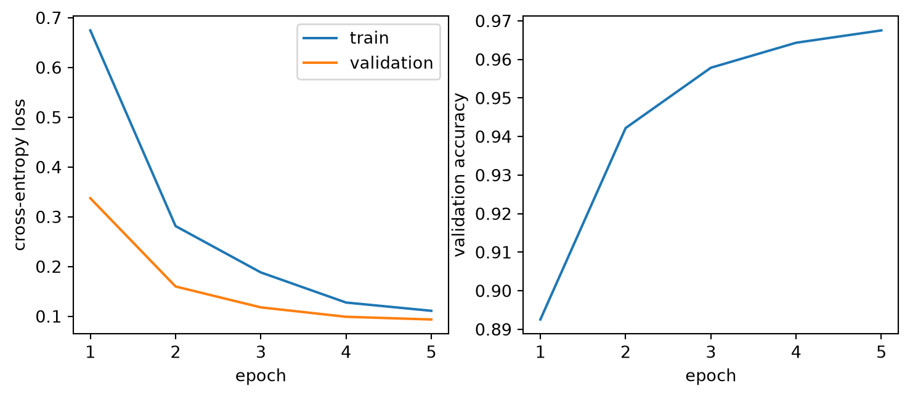

import math # cosine schedule
import time # epoch timing
from pathlib import Path
import timm
import torch
from matplotlib import pyplot as plt
from torch import nn
from torchmetrics import MeanMetric
from torchmetrics.classification import MulticlassAccuracy
from torch.utils.data import DataLoader, Subset
from torchvision.datasets import EuroSAT
from torchvision.models import ResNet18_Weights, resnet18
from torchvision.transforms import v2 as TFine-tuning pretrained models
The training loop gave us an honest baseline: about 81% validation accuracy on EuroSAT. The model had to learn everything, edges and textures included, from our 21,600 training images.
Pretrained models arrive knowing all of that: they were trained on ImageNet, 1.2 million photographs. Transfer learning keeps their feature extractors and retrains a small part for our classes. In this section we run the same loop on such a model and watch the baseline collapse.
Setup
device = (
torch.accelerator.current_accelerator()
if torch.accelerator.is_available()
else torch.device("cpu")
)
torch.manual_seed(42)
print(f"Torch version: {torch.__version__}\nDevice: {device}")Torch version: 2.13.0+cu130
Device: cudaThe canonical data pipeline of the course, unchanged:
root = Path("/project/def-sponsor00/data")IMAGENET_MEAN, IMAGENET_STD = [0.485, 0.456, 0.406], [0.229, 0.224, 0.225]
train_tf = T.Compose([
T.ToImage(),
T.RandomHorizontalFlip(),
T.RandomVerticalFlip(),
T.RandomRotation(90),
T.ToDtype(torch.float32, scale=True),
T.Normalize(IMAGENET_MEAN, IMAGENET_STD),
])
val_tf = T.Compose([
T.ToImage(),
T.ToDtype(torch.float32, scale=True),
T.Normalize(IMAGENET_MEAN, IMAGENET_STD),
])
idx = torch.load(root / "split.pt", weights_only=True)
train = Subset(EuroSAT(root=root, transform=train_tf), idx["train"])
val = Subset(EuroSAT(root=root, transform=val_tf), idx["val"])
loader_kwargs = {
"batch_size": 64,
"num_workers": 4,
"persistent_workers": True,
"pin_memory": torch.accelerator.is_available(),
}
train_loader = DataLoader(
train, shuffle=True, generator=torch.Generator().manual_seed(42),
**loader_kwargs,
)
val_loader = DataLoader(val, **loader_kwargs)
loss_fn = nn.CrossEntropyLoss()
print(len(train_loader), "train batches,", len(val_loader), "val batches")338 train batches, 85 val batchesTime to be honest about the augmentation: we predicted that a pretrained backbone would arrive robust and need little of it. We keep the flips and rotations anyway: they are cheap, label-preserving, and they served the from-scratch baseline. If validation clearly outpaced training performance later, scaling augmentation back would be the first thing to try.
A pretrained backbone
Torchvision ships ResNet-18, a classic convolutional network, with several sets of trained weights. Weights are referenced through enums, so that a recipe stays identifiable:
weights = ResNet18_Weights.IMAGENET1K_V1
model = resnet18(weights=weights).to(device)
print(f"{sum(p.numel() for p in model.parameters()):,} parameters")11,689,512 parameters- The first call downloads the checkpoint (about 45 MB) into ~/.cache/torch; later calls hit the cache.
IMAGENET1K_V1is the original recipe: training run, weights version, and expected preprocessing travel together.weights.metacarries the details (a 30.2% top-1 error on ImageNet), andweights.transforms()returns the canonical preprocessing pipeline.
That canonical pipeline resizes images to 256 pixels and centre-crops to 224: the resolution the recipe was trained at. We deviate on purpose and keep our 64 × 64 patches. ResNet ends with a global average pool, so it accepts any spatial size (and the first layers of a 224-trained network still see meaningful patterns at 64). Upscaling would multiply the pixel count by 12 for a modest gain, and small images keep epochs fast. The one thing we must not deviate from is the normalization, and ours already matches: we adopted the ImageNet statistics course-wide for exactly this moment.
A new head
The last layer of ResNet-18 scores 1,000 ImageNet classes: model.fc, a linear layer from 512 features. It is the only part that knows about ImageNet’s labels, and the only part we cannot reuse. We swap it for a head that scores our 10 classes:
model.fc = nn.Linear(512, 10).to(device)For fine-tuning, we proceed in two phases of increasing cost, a standard recipe for transfer learning.
Phase 1: train the head
The backbone’s features are already excellent; left alone they would settle nicely. We freeze every parameter, then hand-train only the new head:
for p in model.parameters():
p.requires_grad_(False) # freeze everything
model.fc.weight.requires_grad_(True) # ... then unfreeze the new head
model.fc.bias.requires_grad_(True)
trainable = [p for p in model.parameters() if p.requires_grad]
print(f"trainable: {sum(p.numel() for p in trainable):,} parameters")trainable: 5,130 parameters- Freezing happened after the head swap but we unfreeze the head explicitly: order matters, and being explicit beats being clever.
- Frozen parameters receive no gradients, so the optimizer only ever updates the 5,130 values of the head.
- The forward pass through the frozen backbone builds no autograd graph: memory use drops and epochs run about as fast as inference.
optimizer = torch.optim.AdamW(trainable, lr=1e-3, weight_decay=0.01)
freeze_bn = True # explained belowA subtlety of freezing modern backbones: batch normalization. ResNet-18 contains batch normalization layers. In train() mode they normalize every batch by its own statistics, and they keep updating their running averages, even when every parameter around them is frozen. Satellite images sit far from ImageNet’s statistics, so per-batch normalization quietly distorts the pretrained features. We measured the damage: with batch norm left in train() mode, phase 1 plateaued in the low 70s; with the normalization layers held in eval() mode, at the pretrained statistics, it reaches the mid 80s. The freeze_bn flag will tell our loop which regime we are in.
The same loop
Everything else is the loop of the previous section, copied with one change: the number of epochs and the checkpoint path become arguments. The autocast gate comes along unchanged (bf16 stays off on this Turing GPU, for the measured reason):
use_bf16 = device.type == "cuda" and torch.cuda.get_device_capability()[0] >= 8def make_scheduler(max_epochs):
"""Warmup (1 epoch) + cosine decay, recomputed for each phase."""
warmup = len(train_loader) # 1 epoch in steps
total_steps = max_epochs * len(train_loader)
def lr_lambda(step):
if step < warmup:
return (step + 1) / warmup
progress = (step - warmup) / (total_steps - warmup)
return 0.5 * (1.0 + math.cos(math.pi * progress))
return torch.optim.lr_scheduler.LambdaLR(optimizer, lr_lambda)def train_epoch():
model.train()
if freeze_bn: # phase 1: the pretrained normalization stays put too
for m in model.modules():
if isinstance(m, nn.BatchNorm2d):
m.eval()
loss_metric = MeanMetric().to(device)
for x, y in train_loader:
x = x.to(device, non_blocking=True)
y = y.to(device, non_blocking=True)
optimizer.zero_grad()
with torch.autocast(
device_type=device.type, dtype=torch.bfloat16, enabled=use_bf16
):
loss = loss_fn(model(x), y)
loss.backward()
nn.utils.clip_grad_norm_(trainable, 1.0)
optimizer.step()
scheduler.step()
loss_metric.update(loss.detach(), weight=x.size(0))
return loss_metric.compute().item()
def evaluate():
model.eval()
loss_metric = MeanMetric().to(device)
acc_metric = MulticlassAccuracy(num_classes=10).to(device)
for x, y in val_loader:
x = x.to(device, non_blocking=True)
y = y.to(device, non_blocking=True)
with torch.inference_mode():
logits = model(x)
preds = logits.argmax(dim=1)
loss_metric.update(loss_fn(logits, y), weight=x.size(0))
acc_metric.update(preds, y)
return loss_metric.compute().item(), acc_metric.compute().item()
def fit(max_epochs, ckpt_path, patience=4):
global scheduler
scheduler = make_scheduler(max_epochs)
history = {"train_loss": [], "val_loss": [], "val_acc": []}
best_acc, wait = 0.0, 0
for epoch in range(1, max_epochs + 1):
t0 = time.perf_counter()
train_loss = train_epoch()
val_loss, val_acc = evaluate()
history["train_loss"].append(train_loss)
history["val_loss"].append(val_loss)
history["val_acc"].append(val_acc)
marker = ""
if val_acc > best_acc:
best_acc, wait = val_acc, 0
torch.save(
{"model": model.state_dict(), "epoch": epoch, "val_acc": val_acc},
ckpt_path,
)
marker = " *"
else:
wait += 1
print(f"epoch {epoch:2d} train {train_loss:.3f} val {val_loss:.3f} "
f"acc {val_acc:5.1%} {time.perf_counter() - t0:4.1f} s{marker}")
if wait >= patience:
print(f"early stop: no improvement for {patience} epochs")
break
return historymake_schedulerreturns a fresh schedule per phase:LambdaLRholds a reference to the optimizer, so each phase’s new optimizer gets its own.- Clipping and the metric bookkeeping are as before.
Phase 1, six epochs:
history_fe = fit(6, root / "best_fe.pt")epoch 1 train 1.170 val 0.752 acc 75.4% 22.2 s *
epoch 2 train 0.495 val 0.559 acc 80.8% 5.7 s *
epoch 3 train 0.437 val 0.491 acc 83.0% 5.7 s *
epoch 4 train 0.406 val 0.474 acc 83.7% 5.7 s *
epoch 5 train 0.397 val 0.465 acc 84.1% 5.9 s *
epoch 6 train 0.381 val 0.465 acc 83.9% 5.7 sThe frozen model settles in the mid 80s: past the from-scratch baseline already, with only the 5,130 values of the head ever trained. The head had a real mapping to learn (features to 10 scores), but the ceiling is set by the frozen features themselves: they were tuned to 224-pixel photographs, and we are feeding them 64-pixel satellite patches. Lifting that ceiling is the next phase’s job.
Phase 2: fine-tune everything
Now that the head produces sensible scores, gradients through the whole network are meaningful (a randomly-initialized head would have shredded the pretrained features). We unfreeze, start from the best phase-1 weights, and retrain with differential learning rates: the pretrained backbone gets a small rate (its features need gentle adjustments), the head keeps a larger one (it is still the fastest learner):
model.load_state_dict(torch.load(root / "best_fe.pt", weights_only=True)["model"])
for p in model.parameters():
p.requires_grad_(True)
freeze_bn = False # the whole network, normalization included, adapts now
optimizer = torch.optim.AdamW(
[
{"params": [p for n, p in model.named_parameters() if not n.startswith("fc")], "lr": 1e-4},
{"params": model.fc.parameters(), "lr": 1e-3},
],
weight_decay=0.01,
)
trainable = [p for p in model.parameters() if p.requires_grad] # now all of themhistory_ft = fit(5, root / "best_ft.pt")epoch 1 train 0.675 val 0.337 acc 89.3% 10.5 s *
epoch 2 train 0.281 val 0.160 acc 94.2% 10.5 s *
epoch 3 train 0.188 val 0.118 acc 95.8% 10.5 s *
epoch 4 train 0.128 val 0.099 acc 96.4% 10.4 s *
epoch 5 train 0.111 val 0.094 acc 96.8% 10.4 s *The epochs are slower (backward now runs through the whole network) and the gains come in smaller steps: this is refinement, not a jump. But the validation accuracy climbs into the middle 90s, where the from-scratch baseline’s 81% looks like a warm-up.
ckpt = torch.load(root / "best_ft.pt", weights_only=True)
print(f"best epoch: {ckpt['epoch']} val acc: {ckpt['val_acc']:.1%}")best epoch: 5 val acc: 96.8%The payoff
The learning curves of the fine-tuning phase, for the record:
fig, (ax1, ax2) = plt.subplots(1, 2, figsize=(9, 3.5))
epochs = range(1, len(history_ft["train_loss"]) + 1)
ax1.plot(epochs, history_ft["train_loss"], label="train")
ax1.plot(epochs, history_ft["val_loss"], label="validation")
ax1.set_xlabel("epoch")
ax1.set_ylabel("cross-entropy loss")
ax1.legend()
ax2.plot(epochs, history_ft["val_acc"])
ax2.set_xlabel("epoch")
ax2.set_ylabel("validation accuracy")
Compare the two models of the course so far:
- From scratch: 94,538 parameters, 15 epochs, about 81% validation accuracy. One image in five is misclassified.
- Fine-tuned ResNet-18: 11.2 million parameters of which we first trained 5,130, then all of them, 11 epochs total, validation accuracy around 96%. One image in twenty-five is misclassified.
The error rate fell about fivefold, and this on 64-pixel inputs, at a fraction of the original training data. The authors of EuroSAT report 98.6% by fine-tuning the larger ResNet-50 at the full 224-pixel resolution [1]: with more compute, the same recipe climbs further. Starting from pretrained weights is the single highest-leverage move in applied deep learning: nothing else in this course, from torch.compile to multi-GPU training, changes results as much. The next section looks at what the remaining errors actually are.
The same loop ran both models. Swap the model, keep everything else, and the machinery transfers: this is why we invested in a proper loop before touching pretrained models.
timm: the wider catalog
Torchvision carries the classics; timm is the catalog: tens of thousands of image models with trained weights, wrapped in one interface. A taste:
for name in timm.list_models("resnet18*"):
print(name)resnet18
resnet18dEach suffix is a training recipe, in the same spirit as torchvision’s weights enums. Creating a model for our task is one line:
model = timm.create_model("resnet18.a1_in1k", pretrained=True, num_classes=10)num_classes=10swaps the head automatically.- The recipe’s preprocessing (input size, interpolation, mean and std) is available through
timm.data.resolve_model_data_config(model)andtimm.data.create_transform, so you can match it exactly when you want to. - More modern architectures (convnext, efficientnet, vision transformers) are the same call away, at the cost of larger downloads and slower epochs.
For guidance on finding and choosing models, see our workshop Finding and using pre-trained models and our webinar Pretrained models for upscaling.
Beyond full fine-tuning
Fine-tuning updated 11.2 million numbers. At larger scales, the standard becomes parameter-efficient fine-tuning: freeze everything, inject tiny trainable adapters, and train a fraction of a percent of the model. LoRA is the best-known flavor, and it dominates current LLM practice. The mechanics transfer to vision; we will use them in our NLP courses.
Your turn:
Our phase 2 used differential learning rates (backbone 1e-4, head 1e-3). Retrain phase 2 with a single rate of 1e-4 for all parameters, and compare the validation accuracy and the learning curves with ours.
- Hint: reload the phase-1 checkpoint into a fresh
resnet18first, or your run continues from our trained weights. - Hint: watch the early epochs: a uniform small rate slows the head down before it helps the backbone.
References
1.
Helber P, Bischke B, Dengel A, Borth D (2019) EuroSAT: A novel dataset and deep learning benchmark for land use and land cover classification. IEEE Journal of Selected Topics in Applied Earth Observations and Remote Sensing 12(7):2217–2226. https://doi.org/10.1109/JSTARS.2019.2918242